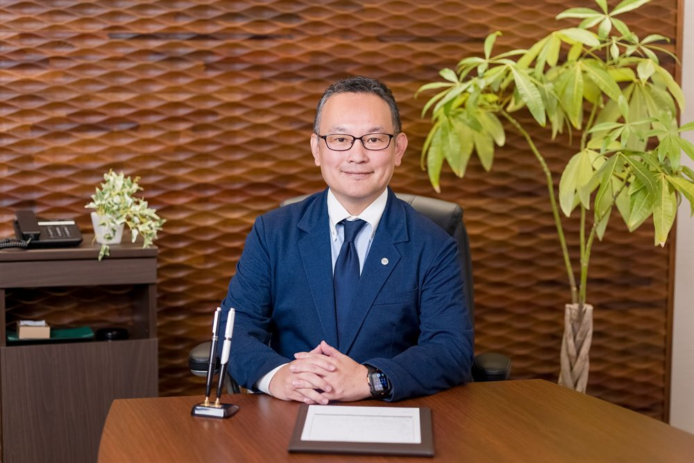

登記・法務パートナー
権利関係の整理や契約・登記手続きが必要な案件で連携し、法的リスクを見落とさない体制を整えます。
ひとつの資産のご相談にも、複数の専門性が必要になります。マネージングディレクターを中心に、案件ごとに最適な体制を編成してご支援します。
不動産・法務・税務など論点が重なり合うご相談だからこそ、単独の担当者だけで抱え込まず、必要な専門性を持つメンバーを都度招集して臨みます。


すべてのご相談の窓口となり、最初のヒアリングから最終的なご提案まで一貫して伴走するコアメンバーです。宅地建物取引士・公認不動産コンサルティングマスターとして、また自らも不動産投資・運用を行う実践者として、中立な立場から資産の意思決定を支えます。
全国の公認不動産コンサルティングマスター等のネットワークから、案件の内容に応じて専門家を招集し、プロジェクトチームを編成します。
権利関係の整理や契約・登記手続きが必要な案件で連携し、法的リスクを見落とさない体制を整えます。
相続対策や事業承継など税務判断が絡む案件で連携し、数字の裏付けを持ったご提案につなげます。
建て替えや増改築の検討が必要な案件で連携し、実行段階まで見据えた現実的な計画を検証します。